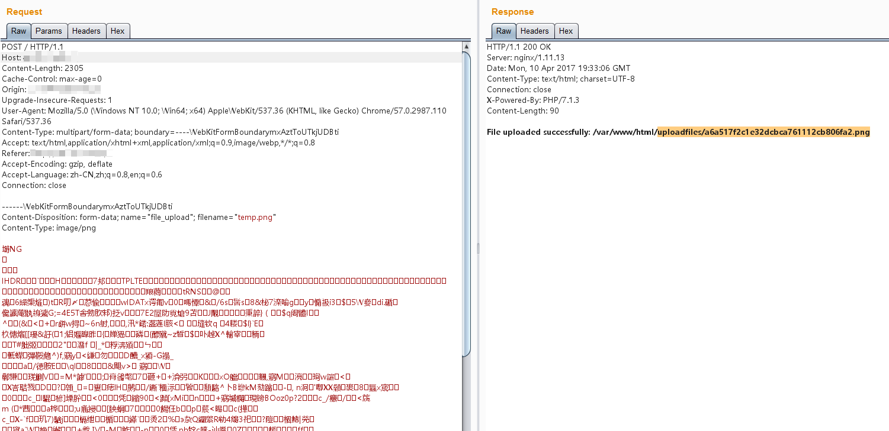

Nginx 解析漏洞¶
Nginx是一款Web服务器，可以作为反向代理、负载均衡、邮件代理、HTTP缓存等。这个Vulhub环境包含一个由用户配置不当导致的解析漏洞。
版本信息：
- Nginx 1.x 最新版
- PHP 7.1.x 最新版
由此可知，该漏洞与Nginx、PHP版本无关，属于用户配置不当造成的解析漏洞。
该漏洞存在的原因是Nginx在配置中对文件扩展名的处理方式。当请求一个具有多个扩展名的文件（如file.jpg.php）时，Nginx可能会根据最后一个扩展名来处理，即使该文件最初是作为图片上传的。
这种配置错误通常出现在以下Nginx配置中：
location ~ \.php$ {
fastcgi_pass 127.0.0.1:9000;
fastcgi_index index.php;
fastcgi_param SCRIPT_FILENAME /var/www/html$fastcgi_script_name;
include fastcgi_params;
}
当请求file.jpg/.php时，Nginx会将其作为PHP文件处理并发送给PHP-FPM解析，尽管它实际上是一个图片文件。这种行为可以被利用来执行作为图片文件上传的恶意代码。
环境搭建¶
直接执行如下命令启动一个包含解析漏洞的Nginx服务器：
docker compose up -d
运行成功后，Nginx将会监听80端口。
漏洞复现¶
访问http://your-ip/uploadfiles/nginx.png和http://your-ip/uploadfiles/nginx.png/.php即可查看效果。
正常显示：

增加/.php后缀，被解析成PHP文件：

访问http://your-ip/index.php可以测试上传功能，上传代码不存在漏洞，但利用解析漏洞即可getshell：


为防止此漏洞：
- 正确配置Nginx的文件扩展名处理
- 实施严格的文件类型验证
- 将上传的文件存储在Web根目录之外
- 使用随机文件名存储上传的文件
- 实施适当的访问控制